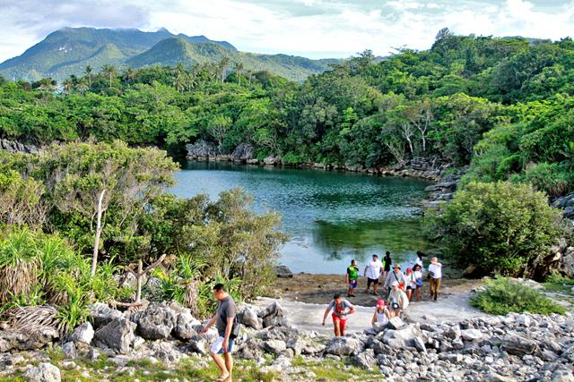

Discover the Mystery of Tinagong Dagat
Located in Romblon, Tinagong Dagat (which means "Hidden Sea") is a secluded lagoon surrounded by rocky cliffs and lush greenery. This hidden paradise is perfect for adventure seekers and nature lovers looking for tranquility away from the crowds.
Photos

Why Visit Tinagong Dagat?
- A hidden lagoon surrounded by limestone cliffs
- Crystal-clear waters perfect for swimming and kayaking
- A peaceful and secluded getaway for nature lovers
- Great for adventure and exploration
- One of Romblon's best-kept secrets